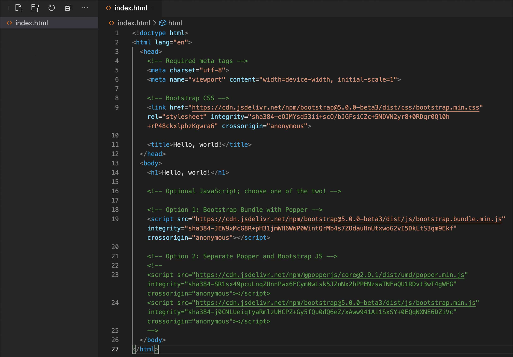

Get started
The first step is to know which version you want to use. There are 2 ways to start using Bootstrap, download or use the starter template.
Download and Install
You can download the file from getbootstrap.com and make sure to read through the installation instructions.
Starter Template here.
You can copy the starter template directly into a Visual Studio code, and you are ready to make your magic.
Layouts
An essential thing to keep in mind while building a site is to make the layout and design look good, and responsive. Bootstrap layout are covering breakpoints, containers, grid, columns, gutters, utilities and z-index.
Breakpoints
One indication of a a good website is that it is responsive. In order to make it responsive, we need to have different screen sizes. Normally, it consists of 3 different screen size, from mobile, tablet and desktop. In the coding process, the change from one screen size to the other screen size is called "breakpoints". In bootstrap, we can directly use the class suffix such as sm,md and lg or customize it using sass file.
Container
The function of a container is to contain all the elements in the layout together. If you want to use the grid, then you need to apply a class container first. In bootstrap there are containers, container-fluid and container breakpoint. Container fluid will filled up the screen from side to side. Container breakpoints are filled up according to the specific breakpoint.
Grid
The grid system manages the width of each of element in the layout. It based on 12 grid. Grids help make a website more responsive. There are several classes used to get the grid system to work, such as breakpoints, containers, rows, and columns. The col or column class is used to set the width in the elements. For example col-6, means that from 12 column, you will use 6 coloumn, or half of the page width.
Components
As the name implies, components contain elements that control the website look and display. Bootstrap components library consist of many elements, such as accordion, alerts, badge, breadcrumb, buttons, card, carousel, collapse, dropdown,list group, modal, pagination, popovers, progress, scrollspy, spinners, toasts, tooltips and navbar ready to use.
Buttons
In bootstrap there are button library styles to use for several actions, including color, sizes and states. The button color is provided based on the action, for example red symbolizes danger, yellow symbolizes warning, and green symbolizes success.
Navbar

Navbar is the navigation bar. Bootstrap hsd a library of choices for navbar ready to use. Navbar consists of the menu, and using lists we can style states such as active or hover states, alignments, dropdownlink, searches and also applying the background color.
Helpers
Contain clearfixes, coloured links, rations, positions, visually hidden, stretched link, and text truncation.
Clearfix
is to clear or remove floated elements in child elements, and normally happens in the float layout.
Colored Links
is to give color in text link whether it is in the hover or active state. It is recommended to choose a color that reflects the actions. Here is the example, for more information click here.
Position
is a class used to help the placement of the elements. There are fixed top, fixed bottom and sticky top. Same as the name fixed means wherever your screen, the position will be always fixed. One of the example of sticky top is apply in this page navigation.
Utilities
Contains API, background, borders, colors, display, flex, float, insteractions, overflow, position, shadows, sizing, spacing, text, vertical align, and visibility.
Background
decorates the background by appling color or color gradients using classes. Bootstrap already provides color coding for the function, but if you need to customize further, you can explore Sass functionality.
Flex
it is very powerful. Helps make sites responsive and wraps the content, including set ups for the grid coloumn, components, alignments and many more. Flexboxes have lots of various properties to use, such as applying flex behaviour, whether it is flex or inline, direction, flex-row or flex-column, and you can apply the responsiveness using the justify to manage the spacing.